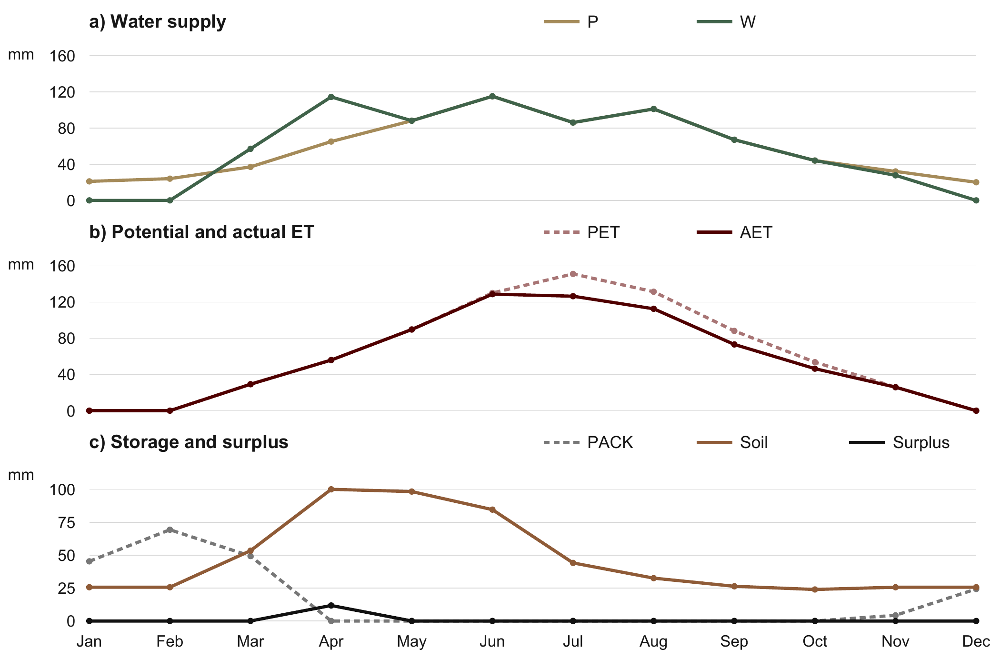

Specified conditions
Gauge observations, basin geometry, meteorology and a supplied monthly climate series.
GEOG 434 / Labs 1, 4 & 5 / Fall 2026
My GEOG 434 labs compare spatial rainfall weighting, open-water evaporation and potential/actual evapotranspiration using documented calculations and figures.


Gauge observations, basin geometry, meteorology and a supplied monthly climate series.
Spatial averages, lake water balance, energy/aerodynamic estimates and soil-water accounting.
Figures and calculations distinguish potential demand, actual loss and storage constraints.
Lab 1 compares arithmetic, Thiessen-polygon, two-axis and isohyetal rainfall averages using digitized geometry. Lab 4 applies water-budget and evaporation methods. Lab 5 compares potential evapotranspiration methods and a monthly soil-water balance.
These are course calculations from specified inputs. Reported precision supports checking arithmetic; it does not establish equivalent measurement accuracy. I would choose an operational method based on available data, time scale and physical assumptions.
Spatial weighting and basin support determine what an average represents. Energy, humidity, wind, soil storage and seasonal context determine how that average can be interpreted. These labs strengthen the physical reasoning behind environmental map comparisons.